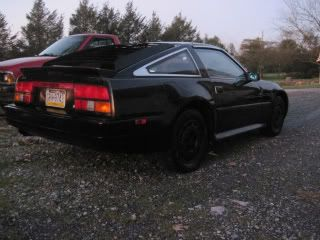

-
Alright, so im in the process of my NA2T and putting a few tricks up my sleeve in the process.
I never really cared for puck clutches, I ended up replacing them in my G20 and said fuck it and went back to OEM. I've driven quite a few cars with them but usualy their pretty ridiculous 3 puck unsprungs, and they suck!
Lately I've been driving around my friends 240SX with an RB25, he has a Sprung 6 puck. The clutch is a little harsh in traffic but it feels great and engagement is smooth, and is grabby as hell when you need it to be.
Now I know some of you are running "ebay" pucks if you will and have gotten a few thousand miles off them and still going, I was wondering which ones you were using as I looked for ones for a 300ZX and couldent come up with any?
I don't need something that lasts a couple years, if I can get a summer out of it ill be happy.1989 300ZX 2+2 N/A GLL
Auto to Manual Swap
NA2T Complete
-
"If your car cant do a burnout from a 60mph rolling start, then your engine needs more work."
"Nitrous doesn't blow up motors; Idiots with nitrous blow up motors."
Shooting for 500whp
 -
Ahh thanks, when I searched for clutches I got some OEM discs but no pucks
Are the F1's what a few of you are running?
Shit for 120 bucks if this thing lasts a few thousand of me beating on it ill be happy
I swear im the master at swapping out clutches now :nanan?re
Not really but 3 hours isnt bad when your taking your time and on jackstands usings a scissors jack to prop it up in place1989 300ZX 2+2 N/A GLL
Auto to Manual Swap
NA2T Complete
-
i dont know about that f1 clutch, looks way too cheap.
at least get a ACT clutch.http://www.youtube.com/user/onefast87 -
He said he was looking on ebay and i gave him what he was looking for.Im sure it will work but i cant say how long it will last nor can i say that about any clutch.Depends on how you drive."If your car cant do a burnout from a 60mph rolling start, then your engine needs more work."
"Nitrous doesn't blow up motors; Idiots with nitrous blow up motors."
Shooting for 500whp
-
6500 miles on a $100 f1 clutch from ebay.
I live in mountain country and there are a lot of lights on the sides of hills so you get into some goofy foot dances.
340 R.W.H.P. at last dyno -- more since then.
no slipping -- a little softer grab than I had hoped actually.
the only major issue is that there is NO pedal feel at all.
not even with the 280zx brake line mod.
it sucks for any precision work but works just fine on normal and dumping take offs.
no chatter.1988 300zx na2t-K27-450 sel injectors-megasquirt-homemade intake and headers
1998 Jeep Grand Cherokee Limited (not worth the repair bills)
1985 Fiero GT -- 3.4 litre 5-speed
1995 Chevy G30 Supercargo
1989 Ford Mustang GT -- 347 stroker,AFR heads,780 holley,summit intake.1 7/8 stainless headers, reverse manual fmx-- 10.01 1/4, 9's this year!!!
1950 nash statesman
1950 nash ambassador
my avatar will eat your avatar! -
is it stiffer compared to stock?kenhill76 wrote: 6500 miles on a $100 f1 clutch from ebay.
I live in mountain country and there are a lot of lights on the sides of hills so you get into some goofy foot dances.
340 R.W.H.P. at last dyno -- more since then.
no slipping -- a little softer grab than I had hoped actually.
the only major issue is that there is NO pedal feel at all.
not even with the 280zx brake line mod.
it sucks for any precision work but works just fine on normal and dumping take offs.
no chatter.1989 300ZX 2+2 N/A GLL
Auto to Manual Swap
NA2T Complete
-
[quote]Shady195 wrote:I'll let you drive my hardbody, then your Z's clutch will feel stiff as hell :POriginally posted by kenhill76- VG30DET (HE341) 86 300ZX - 1982 280ZX Turbo - Headered NA 1986 300ZX 2+2 - 2000 Xterra - -
[quote]michaelp wrote: [quote=Shady195]haha that already happens to me, After a winter of driving the G20 with the cable clutch that i could seriously push down with my pinky, even thou it grabs hard… i get into my z and feel like im doing leg presses.. then after a week it feels too softOriginally posted by kenhill761989 300ZX 2+2 N/A GLL
Auto to Manual Swap
NA2T Complete
-
not any harder or softer than stock -- just no feel at all.
engagement is about halfway up but it feels exactly the same from the floor to the top.
makes it harf to balance when taking off on a hill1988 300zx na2t-K27-450 sel injectors-megasquirt-homemade intake and headers
1998 Jeep Grand Cherokee Limited (not worth the repair bills)
1985 Fiero GT -- 3.4 litre 5-speed
1995 Chevy G30 Supercargo
1989 Ford Mustang GT -- 347 stroker,AFR heads,780 holley,summit intake.1 7/8 stainless headers, reverse manual fmx-- 10.01 1/4, 9's this year!!!
1950 nash statesman
1950 nash ambassador
my avatar will eat your avatar! -
Then its "softer" than stock, b/c I could feel when my stock clutch engaged :-kenhill76 wrote: not any harder or softer than stock -- just no feel at all.
engagement is about halfway up but it feels exactly the same from the floor to the top.
makes it harf to balance when taking off on a hill- VG30DET (HE341) 86 300ZX - 1982 280ZX Turbo - Headered NA 1986 300ZX 2+2 - 2000 Xterra - -
no -- instead of softening the engagement it stiffened the rest of the travel -- so it evened out the pressure rather than increasing or decreasing it.1988 300zx na2t-K27-450 sel injectors-megasquirt-homemade intake and headers
1998 Jeep Grand Cherokee Limited (not worth the repair bills)
1985 Fiero GT -- 3.4 litre 5-speed
1995 Chevy G30 Supercargo
1989 Ford Mustang GT -- 347 stroker,AFR heads,780 holley,summit intake.1 7/8 stainless headers, reverse manual fmx-- 10.01 1/4, 9's this year!!!
1950 nash statesman
1950 nash ambassador
my avatar will eat your avatar! -
I see what you mean, it doesnt get stiffer at a certain spot in pedal travel like stock?kenhill76 wrote: no -- instead of softening the engagement it stiffened the rest of the travel -- so it evened out the pressure rather than increasing or decreasing it.- VG30DET (HE341) 86 300ZX - 1982 280ZX Turbo - Headered NA 1986 300ZX 2+2 - 2000 Xterra - -
not at all -- it feels the same at 1" as it does at floored.
I even took it out to make sure it was installed correctly.
it works well and does not slip so I can hardly justify another clutch until I smoke this one -- and I can't bitch about the price, but I will probably just get a good nismo after this.
nothing I have tried aftermarket for the z has worked well.
from now on it's all nissan,nismo or custom.1988 300zx na2t-K27-450 sel injectors-megasquirt-homemade intake and headers
1998 Jeep Grand Cherokee Limited (not worth the repair bills)
1985 Fiero GT -- 3.4 litre 5-speed
1995 Chevy G30 Supercargo
1989 Ford Mustang GT -- 347 stroker,AFR heads,780 holley,summit intake.1 7/8 stainless headers, reverse manual fmx-- 10.01 1/4, 9's this year!!!
1950 nash statesman
1950 nash ambassador
my avatar will eat your avatar! -
DXD

Copyright © 2006–. All rights reserved. Privacy Policy